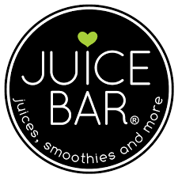

i love juice bar is on a mission to create great tasting and nutritious juices, smoothies, bowls and bites. our menu is full of fresh offerings that are equally craveable and guilt-free.
we take a lot of pride in serving products that are high in nutritional value. our juices are made fresh to order, and our smoothies are made with frozen fruit instead of ice – which is commonly used by other companies as a filler ingredient. we want your drinks to be full of nourishment, not fillers.best of all, we have created a juice bar experience built on convenience. we believe healthy food should be as accessible as fast food.so beyond our made-to-order menu, all of our stores are stocked with grab-and-go options that are perfect for a quick, healthy bite or sip.
whether you are a juicing novice or you're a smoothie pro, we've crafted unique recipes that are packed with nutrition, taste amazing and are a quick way to fuel up on healthy ingredients!

we take a lot of pride in using ingredients that are high in quality, responsibly sourced, nutrient-rich, and plant-based to help power you through your daily routine.
we never use any added fillers, syrups, sugars or artificial ingredients of any kind and we make all of our menu items fresh for you every single day.
contact-9876567865
@2020 ilovejuicebar
ilovejuicebar@fb